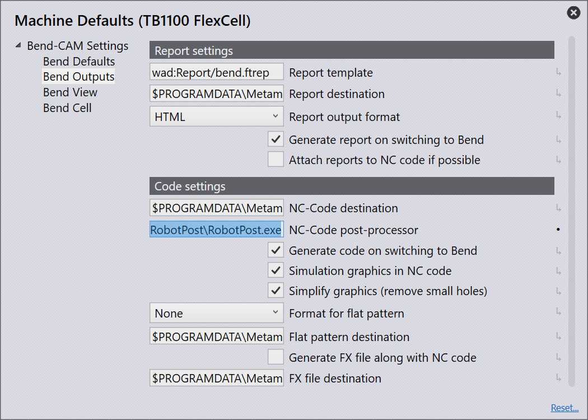
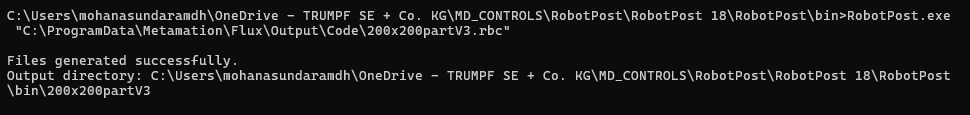
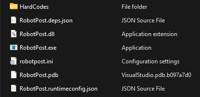
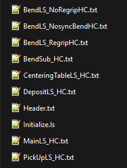
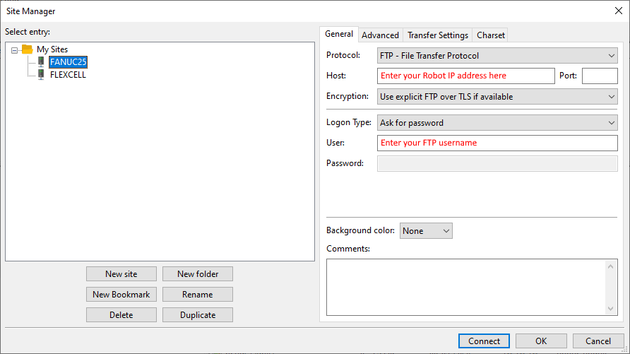
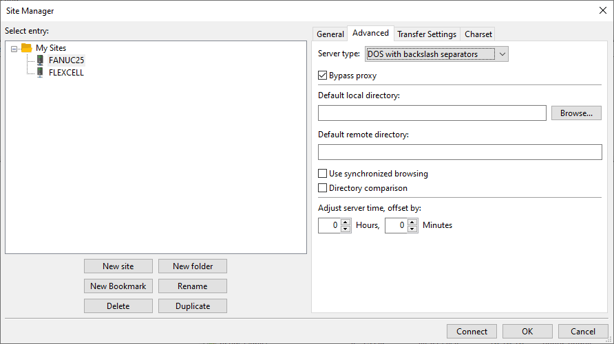
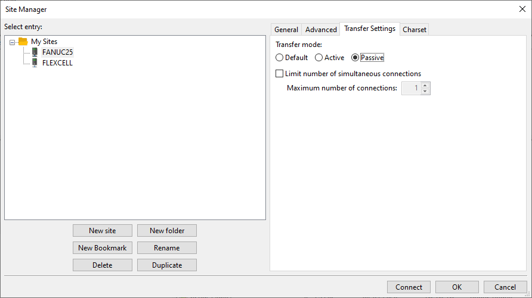
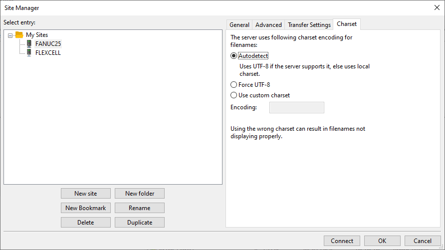
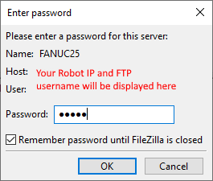

Post Processor
The Post Processor is a .exe file. It processes the .rbc files generated by Flux and produces the necessary robot programs in .LS format for use with the robot controller.
Setup in Flux
Ensure these steps are followed to set up the post processor in Flux:
-
Provide the Location of the Post Processor in Flux
-
Navigate to Settings → Machine Defaults → Bend Outputs → Code Settings → NC-Code post-processor (Provide the exact location of the post processor .exe file in the text box).

-
Stand-alone running of the exe
-
Navigate to the location of the exe and open the command prompt.
-
Provide the exe and path of the rbc file inside double qoutes to run the post processor.

File Package
The Post processor file package contains the list of files that are required to run the post processor. This file package will be provided to the user. The files to be provided are shown below:

| Files inside HardCodes folder and the robotpost.ini file can be edited by the user. |
-
robotpost.ini file contains Outjoint data. Toggle the value of the outjoint data to 1 if you want all the waypoints generated in the .LS files as Joint coordinates. Toggle the value to 0 if you want all the waypoints generated in the .LS files as Cartesian coordinates.
-
HardCodes folder contains the hard coded templates for the .LS files. The user can edit these templates as per their requirements. The .LS files generated by the post processor are based on these templates. The user can edit these templates to change the structure of the generated .LS files. It is recommended to take a backup of the original templates before making any changes.
Workflow
1. Input File Acquisition
-
Gets the .rbc file directly from Flux and processes it. This file contains critical information about ram points, robot positions, and other necessary data.
2. File Parsing
-
When processing an .rbc file, the following key details are extracted:
-
Number of Bends - Identifies the total count of bends present in the .rbc file.
-
Regrip Status - Determines whether a bend operation requires a regrip.
-
Clamp Regrip Presence - Checks if clamp regrip is required for the bending operation.
-
Motion Points and their Reference Names - Extracts all motion points and their reference names for easy identification.
-
Motion Type - Classifies each motion as either:
-
Joint Motion: The robot moves all joints in a coordinated manner.
-
Linear Motion: The robot moves in a straight-line path between two points.
-
-
-
The extracted points are categorized into three distinct groups:
-
Main LS - These are the primary positioning points and data for the robot in the process.
-
Bend LS - Points and data specifically associated with the bending operations.
-
Ram Points - Points related to ram movements within the bending cycle.
-
3. Hard-Coded Templates

HardCodes folder contains the following files:
-
MainLS_HC.txt - This text file contains the template for the Main LS file for the respective .fx program.
-
Initialize.ls - This LS file resets all machine outputs before initializing bending.
-
PickUpLS_HC.txt - This text file contains the template for the Sub Pickup LS file for the respective .fx program.
-
CenteringTableLS_HC.txt - This text file contains the template for the Sub Center LS file for the respective .fx program.
-
Bend Positioning - The Bend1Positioning_Sub.LS file is generated based on the following templates:
-
BendLS_NoRegripHC.txt - When the program has no regrip for the bend operation, this template is used to generate the Bend1Positioning_Sub.LS file.
-
BendLS_RegripHC.txt - When the program requires a regrip for the bend operation, this template is used to generate the Bend1Positioning_Sub.LS file.
-
BendLS_NonsyncBendHC.txt - When the program has non-synchronized bends, this template is used to generate the Bend1Positioning_Sub.LS file.
-
-
BendSub_HC.txt - This text file contains the template for the BENDSUB.LS file for the respective .fx program.
-
DepositLS_HC.txt - This text file contains the template for the Sub Deposit LS file for the respective .fx program.
-
Header.txt - This text file contains the template for the header section of all the generated .LS files.
| For more details on this LS files, refer to the Sample LS Program Despcription section. |
Hard-Code Template Editing
| The user needs to follow the structure of the hard coded templates while editing. The user can edit the content in these sections as per their requirements but should not change the structure of the template. It is recommended to take a backup of the original templates before making any changes. |
Waypoint Editing in the Hard-Coded Templates
Given below is an example of the content inside the Hardcode’s .txt file.
! Update the contact point -;
! for stack search program -;
!------------------------------------;
<PR[63]:=Contact>
!------------------------------------;
! Update with req arguments -;
! for different gripper usage -;
!------------------------------------;
Call FUNCCombiGripper(<Argument 1>,<Argument 2>,<Argument 3>) ;
!------------------------------------;
! To pickup from top of the stack -;
!------------------------------------;
Call Sub_StackSearch;
/[Contact] <To skip a waypoint, use a backslash before the waypoint>
R[16:SPD_L]=1000;
wait 0.25(sec);
[Separate] <It will write the waypoint in LS since backslash is not used>
4. File Generation
With the extracted data from the .rbc file, the post processor generates the necessary .LS files based on the hard coded templates. The generated .LS files are then uploaded to the robot controller.
5. File Export
Files can be exported to the robot controller either by FileZilla or by using Command Prompt.
File transfer using FileZilla
-
Connect the PC to the robot controller using Ethernet. Ensure that PC and robot controller IP addresses are correctly configured to establish the connection.
-
Download and install FileZilla on the PC if not already installed.
-
Open FileZilla, Navigate to File → Site Manager and do the setup of all the tabs in FileZilla as same as shown in the image below:
 
 

| The user needs to provide the actual Robot IP address, FTP’s username and its password of their robot controller to connect with FileZilla. |
-
Once connected, navigate to the directory on the PC where the .LS files are located. Then select all the .LS files and upload them to the robot controller.
| All the files in the robot controller can also be downloaded to the PC by using FileZilla. |
File transfer using Command Prompt
Go to the location where the .LS files that need to be uploaded to the robot controller. Open Command prompt on that location and use the following command to upload the files to the robot controller:
-
Command to establish an FTP connection between PC and robot controller.
FTP -i <IP_ADDRESS> (replace <IP_ADDRESS> with the actual IP address of the robot controller)
After establishing the FTP connection, provide the following credentials for FTP login:
User (192.168.100.175:(none)): <Provide the FTP password of the robot controller>
Once logged in, Enter the below commands to change the directory.
ftp> cd md:
-
Command to upload the files from the PC to the robot controller.
MPUT <filename>.LS (replace <filename> with the actual name of the .LS file to be uploaded)
-
Command to download the files from the robot controller to the PC.
ftp> mget Bend1positioning_sub.ls
Here, Bend1positioning_sub.ls is an example file. The user needs to provide the actual name of the file to be downloaded from the robot controller to the PC.
-
Command to download all the files from the robot controller to the PC.
FTP> mget *.*
| To download a specific file format, use the command mget *.<file_extension> |
Example: Command mget *.LS to download all the .LS files from the robot controller to the PC.
6. Sample Command File
Sample .txt command file is shown in the image below: